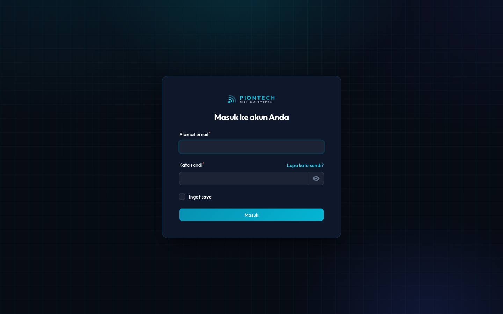

Piontech Billing System
Sistem penagihan internet: mencatat pelanggan, menagih setiap bulan, menerima setoran petugas, dan merangkumnya jadi laporan. Panduan ini dibagi menurut peran — buka halaman yang sesuai dengan tugas Anda.
Pilih peran Anda
CEO Akses penuh
Pemilik / pimpinan
Melihat seluruh angka bisnis, mengelola akun pengguna, mengatur tarif komisi petugas, dan memeriksa log aktivitas.
Admin Penagihan
Staf kantor
Mengelola pelanggan, mencatat pembayaran & setoran petugas, mengisolir penunggak, dan menarik laporan.
Petugas Lapangan
Penagih di lapangan — pakai HP
Menagih pelanggan di daerahnya dan mencatat pembayaran, tunai maupun transfer.
Cara sistem bekerja
Inti sistem ini adalah perjalanan uang dari pelanggan sampai ke kantor. Ada dua jalur, dan keduanya diperlakukan berbeda:
Urutan input data
Sistem baru tidak bisa langsung dipakai menagih — ada data dasar yang harus diisi lebih dulu, karena satu data bergantung pada data lain. Ikuti urutan ini:
Pengguna
Buat akun petugas dan admin. Wajib duluan: daerah butuh petugas, setoran butuh admin penerima.
Paket
Daftar paket internet beserta harganya. Sertakan paket Custom untuk harga khusus.
Daerah
Wilayah penagihan. Setiap daerah wajib punya satu petugas penanggung jawab.
Pelanggan
Wajib memilih daerah. Paket boleh dikosongkan bila nominal tagihan diisi manual.
Komisi Petugas
Saat membuat akun petugas, isi Komisi per Pelanggan. Default Rp 4.000, bisa berbeda tiap petugas.
Setelah data dasar lengkap, kegiatan rutin bulanannya:
Tagihan Bulanan
Lihat siapa yang harus ditagih bulan ini.
Transaksi
Catat setiap pembayaran yang masuk.
Setoran Petugas
Catat uang tunai yang diserahkan petugas.
Laporan
Tarik rekap, tunggakan, dan komisi.
Siapa boleh apa
Menu yang tampil berbeda-beda per peran. Ini alasannya:
| Menu / Tugas | CEO | Admin | Petugas |
|---|---|---|---|
| Dashboard & angka bisnis | Ya | Ya | Versi ringkas |
| Tagihan Bulanan | Ya | Ya | Versi HP |
| Data Pelanggan — lihat | Ya | Ya | Daerah sendiri |
| Tambah / ubah pelanggan | Ya | Ya | Tidak |
| Ubah status pelanggan (ISOLIR / Pulihkan) | Ya | Ya | Tidak |
| Hapus pelanggan | Ya | Ya | Tidak |
| Catat pembayaran | Ya | Ya | Tunai & transfer |
| Ubah / hapus transaksi | Ya | Ya | Tidak |
| Catat setoran petugas | Ya | Ya | Lihat riwayat saja |
| Import & Export Excel | Ya | Ya | Tidak |
| Master Paket & Daerah | Ya | Ya | Tidak |
| Laporan (6 jenis) | Ya | Ya | Tidak |
| Pengguna (akun) | Ya | Tidak | Tidak |
| Log Aktivitas | Ya | Tidak | Tidak |
Istilah penting
| Istilah | Artinya |
|---|---|
| Daerah | Wilayah penagihan. Setiap daerah dipegang satu petugas; petugas hanya melihat pelanggan di daerahnya. |
| Periode | Bulan tagihan, misalnya Agustus 2026. Satu pelanggan hanya boleh punya satu transaksi per periode. |
| ISOLIR | Layanan dihentikan sementara karena menunggak. Pelanggan ISOLIR masih ditagih. |
| Berhenti | Pelanggan sudah tidak berlangganan. Tidak lagi masuk daftar tagihan. |
| Harus Ditarik | Total tagihan pelanggan di daerah petugas, dikurangi yang sudah dibayar lewat transfer. |
| Sisa / Cash di Tangan | Uang tunai yang sudah ditarik petugas tetapi belum disetorkan ke admin. |
| Belum Ditarik | Bagian dari Harus Ditarik yang belum berhasil ditagih petugas. Berbeda dari Cash di Tangan, yang sudah tertagih tetapi belum disetor. |
| Komisi | Upah petugas: jumlah pelanggan yang lunas di daerah-nya dikali tarif Komisi per Pelanggan pada akun petugas itu. |
Cara masuk
Semua peran memakai halaman login yang sama. Setelah berhasil masuk, sistem otomatis mengarahkan Anda ke tampilan yang sesuai: admin dan CEO ke tampilan kantor, petugas ke tampilan HP.
- Buka alamat sistem di browser, lalu tambahkan
/logindi belakangnya. - Masukkan alamat email dan kata sandi Anda.
- Tekan Masuk.
